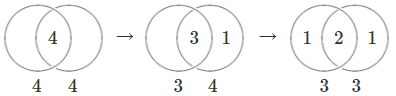

Searching for Parliament
Selecting a group of people to represent a nation is an example of what computer science calls an assignment search problem. Which reps (candidates) are the most representative of the voters?
We'll construct a mathematical model of the assignment search problem, implement this model in the Python programming language with an optimization package called Gurobi, and compute and visualize an optimal solution.
The implementation of the model and the structure of this explanation is forked from the work of Emilien Dupont (on github and hosted as a featured example on Gurobi's website). The code for this website is on github.
Click the screenshot to skip directly to the Live Demo!

Problem Description
Northern England gets rid of district boundaries because there was too much debate about where the boundaries should go. It wants to pick 5 reps. And it wants to space them out instead of having them all from the middle. It wants regional interests to be represented and it doesn't want all the seats to be taken by people from the same neighborhood in the middle of Northern England.
Several good reps (lets say "reps" instead of "potential representatives" or "candidates") have decided to run, but it remains to decide which of the reps should win.
Selecting reps from the middle of Northern England would be advantageous as they would have the most votes overall. However, voters from the middle of Northern England would be overrepresented and voters from the coast would be very far from their from their reps.
We will find the optimal tradeoff between reps being near all the voters and voters having reps nearby.
Search Trees
Our problem is related to a very famous problem in computer science called the knapsack problem. It differs in many ways. It is similar in how it can be solved. Both are kinds of binary search. A search problem tries to find a combination of variables that is in some way the best combination. One way to approach such a problem is the branch and bound method. Here is a video on the branch and bound method from a fantastic Coursera course in the field of discrete optimization. From this video, just understand that there is a large number of possible choices to make and that they can all be organized in a tree structure. (The actual algorithm for searching through the tree will be taken care of by Gurobi, and we don't talk about it below.) We still haven't said what the score is for each choice (or path) in the tree, so let's do that. Most of the writing below is about that. Each choice in the tree represents whether a rep wins. The first split is for the first rep, the second split is for the second rep, etc.

This tree is not for the problem at hand, but our problem is similar because it has the same binary variables $x_i$.
Mathematical Model
Let us now formulate a mathematical model for our problem.
We need to say when we choose a rep. Let's list all the reps as rep #1, rep #2, rep #3, etc, and let's make variables for each one. If we choose rep #1, then $x_1=1$ and if we don't choose rep #2, then $x_2=0$. Basically, $x_j$ is binary. \[ x_j = \left\{\begin{array}{ll} 1 & \text{if we choose rep #j, }\\ 0 & \mathrm{otherwise.} \end{array}\right. \] We set a constraint on the $x_j$ variables because there are only a limited number of seats in the legislature. We set the sum of all $x_j$ to this number of seats. \[ \sum_{j \in Reps} x_j = \text{number of seats} \]
We need to say how close a voter is to a rep. Let's list all the voters as voter #1, voter #2, etc, and let's make measurements for each voter and rep combination. If the distance between voter #1 and rep #3 is 100 km, then $d_{13}=100$. \[ d_{ij} = \text{distance between voter i and rep j} \]
What does a ballot look like? We want to make this problem easy to show on a map so we're going to make a simplification of the problem. We're going to let the voters give the reps scores. This is actually nicer for the voters because they get to say what they think of every rep. Also, we're going to make every voter use the same scoring scale, and they will base their score entirely on how far away the rep is. Basically, the inverse of distance. \[ \begin{array}{ll} a_{ij} & = {\displaystyle \frac{1}{d_{ij}/10 + 1} } & \text{Inverting distance}\nonumber \\ b_{ij} & = {\displaystyle a_{ij} * \frac{1}{\max_{m \in Voters}{a_{mj}}}} &\text{Ballot normalized} \nonumber \end{array} \]
(The 10 is here for scaling distance. The extra 1 is here to avoid dividing by 0. Really, there are many choices for this function. One more modification we make is to let voters who don't have a very close rep vote with their full vote for their closest rep. This normalization is here because voters would give the rep closest to them the highest score possible even if they aren't actually all that close.)
We need a way to count the ballots. The easiest way is to add them together to get the reps' tallies. \[ tally_j = \sum_{i \in Voters} b_{ij} \]
If we stop here then we just end up picking the reps in the middle because they have the highest tallies.
We want to avoid overrepresenting the middle voters. Our solution is to let the winning reps keep a fraction of their voters' ballots. Basically, these voters have the reps, so the reps get to keep the voters. Each winning rep keeps the same amount of support. \[ keep = \left[ \begin{array}{ll} & \text{an amount of score,} \\ & \text{same units as ballots} \\ & \text{same for each pair of reps} \\ \end{array} \right] \]
The idea of the rep keeping some ballots is not new. The election method called Single Transferable Vote (STV) does the same thing. It is different because it doesn't use scores. It uses ranking. Still, it is very similar. STV calls it a quota. When a rep is declared a winner, he keeps a quota of votes and the extra go to other reps similar to him if the voters have both on their ballot. \[ \text{STV quota} = \frac{\text{voters}}{\text{seats} + 1} \] The quota is set as the number of voters divided by the number of seats to fill with reps. An additional 1 is added to the number of seats because of the iterative nature of STV (a longer explanation is needed).
Let's try something similar: \[ keep = \frac{\text{voters}}{\text{seats}} \] STV subtracts this for each pair of reps when one of the pair wins and they are supported by the same group of voters. We want to subtract this for each similar pair, and we want to show why it selects the correct number of reps for a group of voters.
Mini example to show proportionality
Ok, we'll show an example. We can actually see the method at work. \[ \begin{align} 3& \text{ seats} \nonumber \\ 6& \text{ voters} \nonumber \\ 2& \text{ voters for party A: A1,A2,A3,...} \nonumber \\ 4& \text{ voters for party B: B1,B2,B3,...} \nonumber \\ \end{align} \] Here are the ballots for just the parties: \[ \begin{bmatrix} A: & 1 & 1 & 0 & 0 & 0 & 0 \\ B: & 0 & 0 & 1 & 1 & 1 & 1 \end{bmatrix} \] Here are the tallies for each of the reps: \[ \begin{bmatrix} A_1: & 2 \\ A_2: & 2 \\ B_1: & 4 \\ B_2: & 4 \\ \end{bmatrix} \] We can also write the tallies along the diagonals of this table \[ \begin{bmatrix} &A_1 &A_2 &B_1 &B_2 \\ A_1: & 2 & & & \\ A_2: & & 2 & & \\ B_1: & & & 4 & \\ B_2: & & & & 4 \\ \end{bmatrix} \] Keeps happen when two reps from the same party get elected. For every pair, there is a table entry, so lets fill in those entries with keeps. \[ keep = \frac{\text{voters}}{\text{seats}} = \frac{\text{6}}{\text{3}} = 2 \] There are two table entries for each pair, so we divide this $keep$ between them. \[ \left[ \begin{array}{rr} &A_1 &A_2 &B_1 &B_2 \\ A_1: & 2 & -1 & & \\ A_2: & -1 & 2 & & \\ B_1: & & & 4 & -1 \\ B_2: & & & -1 & 4 \\ \end{array} \right] \] We want to choose the 3 reps with the most votes. So we try each combination, and for each we add the tallies and subtract the keeps.
1 from A and 2 from B is the best combination: \[ \left[ \begin{array}{rr} &A_1 & \text{ } &B_1 &B_2 \\ A_1: & 2 & & & \\ & & & & \\ B_1: & & & 4 & -1 \\ B_2: & & & -1 & 4 \\ \end{array} \right] = 2+4+4-1-1=8 \] The keeps can be drawn on a Venn diagram. There are 4 voters here. First take 1 from the shared voter pool for one rep. Then take 1 for the other.

2 from A is not as good because there are a disproportionate number from A: \[ \left[ \begin{array}{rr} &A_1 &A_2 &B_1 & \text{ } \\ A_1: & 2 & -1 & & \\ A_2: & -1 & 2 & & \\ B_1: & & & 4 & \\ & & & & \\ \end{array} \right] =2+2+4-1-1=6 \] If there were 3 winners from B, the total votes would be even less. \[ \left[ \begin{array}{rr} & & \text{ } &B_1 &B_2& B_3 \\ & & & & & \\ & & & & & \\ B_1: & & & 4 & -1 & -1 \\ B_2: & & & -1 & 4 & -1 \\ B_3: & & & -1 & -1 & 4 \\ \end{array} \right] = 4+4+4-1-1-1-1-1-1=6 \] The best combination was when there the proportion of votes matched the proportion of seats. That means the way we count votes is proportional. Also notice we lost 2 points whether we went forward or back, so we're right on the maximum. We can get proportionality by just maxmizing the sum of this table. We also gained a nice table graphic for counting votes.
Proportionality
Lets do some maximization to show that this is the right number of keeps. It might seem that each rep should hold on to the keeps rather than splitting them. So we will find out if the amount of keeps should be some other number. \[ \begin{align} C_t& \text{ seats} \nonumber \\ N_t& \text{ voters} \nonumber \\ N_A& \text{ voters for party A: A1,A2,A3,...} \nonumber \\ N_B& \text{ voters for party B: B1,B2,B3,...} \nonumber \\ C_A& \text{ number of winners for party A} \nonumber \\ C_B& \text{ number of winners for party B} \nonumber \\ \end{align} \] For each party, let's look at the winners add the tallies and subtract the keeps: \[ \left[ \begin{array}{rr} & A_1 & A_2 & \text{...} & A_{C_A} \\ A_1: & N_A & -K/2 & & -K/2 \\ A_2: & -K/2 & N_A & & -K/2 \\ \text{...} & & & & \\ A_{C_A}: & -K/2 & -K/2 & & N_A \\ \end{array} \right] = N_A*C_A-\frac{1}{2}K*C_A*(C_A-1) \] For both parties, \[ Obj = N_A*C_A-\frac{1}{2}K*C_A*(C_A-1) + N_B*C_B-\frac{1}{2}K*C_B*(C_B-1) \] Let's maximize this objective function on $C_A$ by setting its derivative to $0$ and solving for $K$: \[ \begin{align} \frac{d \ Obj}{d \ C_A} &= 0 \nonumber \\ \nonumber \\ 0 &= N_A-N_B-K*C_A+K*C_B \nonumber \\ \nonumber \\ K &= \frac{N_A-N_B}{C_A-C_B} \nonumber \end{align} \] Now lets enforce proportionality. Proportionality means every party has the same number of voters per rep: \[ \frac{N_A}{C_A}=\frac{N_B}{C_B}=\frac{N_t}{C_t} \] So we substitute and do algebra to get a confirmation of what we already guessed. \[ K =\frac{N_A-N_B}{C_A-C_B}=\frac{N_t}{C_t}=\frac{\text{voters}}{\text{seats}} \nonumber \\ \] \[ keep =\frac{\text{voters}}{\text{seats}} \nonumber \] So we know we have a proportional system.
Finishing the Model: Similarity
What if the voters don't fall into parties?
A party is just a group of people who vote the same. Take an example. Say rep A and B say they are from different parties. What if a voter votes for both? How do we account for proportionality?
Take an example of 3 voters. One for A, one for B, and one for both: \[ \text{A partisan voter for A: } \ \begin{bmatrix} A: & 1 \\ B: & 0 \end{bmatrix} \] \[ \text{A partisan voter for B: } \ \begin{bmatrix} A: & 0 \\ B: & 1 \end{bmatrix} \] \[ \text{A voter for A and B: } \ \begin{bmatrix} A: & 1 \\ B: & 1 \end{bmatrix} \] Let's look at all the ballots together. We have 3 kinds of voter. 1 out of 3 treats A and B as a single party. It is like A and B are part of the same party, the AB party: \[ \text{Three voter pools: } \ \begin{bmatrix} A: & 1 & 1 & 0 \\ B: & 0 & 1 & 1 \end{bmatrix} \quad \rightarrow \begin{bmatrix} AB: & 1 \\ A: & 1 \\ B: & 1 \\ \end{bmatrix} \] How do we account for this in our bookkeeping about kept votes? 1/3 of the votes for A or B were for both A and B. So we reduce the number of kept votes to 1/3 of the usual. \[ \frac{1}{3} = \frac{0 + 1 + 0}{1 + 1 + 1} \] This measure is actually common. It is called the Jaccard similarity. Stated mathematically, \[ \begin{align} \nonumber \\ s_{jk} & = \frac{\sum_{i \in Voters} min(b_{ij}, b_{ik})}{\sum_{i \in Voters} max(b_{ij}, b_{ik})} \text{ } \text{ } \text{ } \text{ (Similarity between rep j and rep k)}\nonumber \\ \end{align} \]
Mixture Example
Let's try to justify this more and build an intuition by working through an example: \[ \text{mixture example: } \ \begin{bmatrix} A: & 1 & 1 & 1 & 1 & 0 & 0 \\ B: & 0 & 0 & 1 & 1 & 1 & 1 \end{bmatrix} \quad \rightarrow \begin{bmatrix} AB: & 2 \\ A: & 2 \\ B: & 2 \\ \end{bmatrix} \] This is actually a mixture of two extremes. A 1-party extreme where A and B are actually from the same party, and a 2 party extreme where A and B are from different parties: \[ \text{1-party extreme: } \ \begin{bmatrix} A: & 1 & 1 & 1 & 1 & 1 & 1 \\ B: & 1 & 1 & 1 & 1 & 1 & 1 \end{bmatrix} \quad \rightarrow \begin{bmatrix} AB: & 6 \\ A: & 0 \\ B: & 0 \\ \end{bmatrix} \] \[ \text{2-party extreme: } \ \begin{bmatrix} A: & 1 & 1 & 1 & 0 & 0 & 0 \\ B: & 0 & 0 & 0 & 1 & 1 & 1 \end{bmatrix} \quad \rightarrow \begin{bmatrix} AB: & 0 \\ A: & 3 \\ B: & 3 \\ \end{bmatrix} \] Across both extreme examples, the same number of candidates win from each party. So the middle example should have the same result. \[ \text{different examples, same result: } \ \begin{bmatrix} & \text{2P:} & \text{M:} & \text{1P:}\\ AB: & 0 & 2 & 6 \\ A: & 3 & 2 & 0 \\ B: & 3 & 2 & 0 \\ \end{bmatrix} \] A test with Jaccard similarity would show that maximizing the table sum gives the same composition of winners. Let's now see how we would write up this test.Add Similarity to Model
Let's include this similarity measure in our model. We need to adjust the number of votes that are kept when a pair of candidates share the same voter support: \[ keeps_{jk} = keep * s_{jk} \nonumber \] We only do this when both reps win. We want to make an indicator for when both reps win. Remember the $x$ is binary and it indicates the winners. \[ \begin{array}{l} x_j * x_k & \text{Indicates when both reps have won} \end{array} \] We can now refine our model to maximize the following, called an objective function: \[ \text{Maximize} \sum_{j \in Reps} tally_j * x_j - \sum_{j \in Reps,k \neq j} \frac{1}{2} keeps_{jk} * x_j * x_k \] This expression is just the sum of the table, so it's basically just letting us add up the tally and subtract the keeps for the winning reps. The 1/2 factor is in there because there are 2 entries $x_{jk}$ and $x_{kj}$ for each pair. So! We have a new and better table to add up and maximize! It is better because now we don't need parties! It's the voters that matter, not the parties.The model is actually like a sudoku
There is a really easy way to visualize what the model is trying to do. We reduced the problem to crossing out the rows and columns in a table. Cross out the row and column for each rep that lost. Add the remaining tallies and keeps. Try to find the 4 winners by crossing out the losing rep's row and column. \[ \begin{bmatrix} 10 & -4 & -3 & 0 & -1 \\ -4 & 10 & -3 & 0 & -1 \\ -3 & -3 & 8 & -2 & 0 \\ 0 & 0 & -2 & 11 & 0 \\ -1 & -1 & 0 & 0 & 17 \\ \end{bmatrix} \] The solution is to cross out the 3rd rep's row and column. He had the lowest tally overall and he also overlapped in similarity with most of the other reps, so basically his territory was covered better by the other reps.

Formal Model
To sum up, the model maximizes a sum of linear and quadratic terms involving binary variables $x_j$ and a table of measurements. There is a constraint that there are a specified number of winners. Gurobi takes care of the search algorithm to find the maximum among a really large number of combinations (think factorial!).
The problem is defined by the following model in the variable $x_j$ : \[ \begin{array}{ll} \text{Maximize} & {\displaystyle \sum_{j \in Reps} tally_j * x_j - \sum_{j \in Reps,k \neq j} \frac{1}{2} keeps_{jk} * x_j * x_k } \\ \\ \text{Subject to} & {\displaystyle \sum_{j \in Reps} x_j} = \text{number of seats} \\ & x_j \in \{ 0, 1 \} \\ \\ \end{array} \\ \begin{array}{lrll} \text{Constants } & keeps_{jk} & = keep * s_{jk}& \text{Rep j keeps these votes from rep k}\\ \\ & s_{jk} & = {\displaystyle \frac{\sum_{i \in Voters} min(b_{ij}, b_{ik})}{\sum_{i \in Voters} max(b_{ij}, b_{ik})} }& \text{Similarity between reps j and k} \nonumber \\ \\ & keep & = {\displaystyle \frac{\text{voters}}{\text{seats}} } & \text{Amount of ballots kept (if s=1, e.g. for clones)}\\ \\ & tally_j & = {\displaystyle \sum_{i \in Voters} b_{ij} } & \text{Add up the ballots}\\ \\ & b_{ij} & = {\displaystyle a_{ij} * \frac{1}{\max_{m \in Voters}{a_{mj}}}} &\text{Ballot} \\ \\ & a_{ij} & = {\displaystyle \frac{1}{d_{ij}/10 + 1} } & \text{Inverting distance}\\ \\ & d_{ij} & & \text{Distance between voter i and rep j on the map} \end{array} \]
Implementation
Below is an example implementation of the model with example data in Gurobi's Python interface:
For the full implementation, see https://github.com/paretoman/searchingforparliament.
Here is a link to Gurobi. I kept it here because I forked this project from Emilien Dupont (on github and hosted as a featured example on Gurobi's website)
I suggest using conda to install it. And then there is a license to download, so you have to make an account on the gurobi website. I used Python 2.
Live Demo
Below is a visualization of our example. We are using the location data from GeoLytix for a large supermarket chain in the UK, and visualizing its outlets in Northern England. (This is an approximation to population distribution.)
The voters are represented by:
By clicking the map you can add rep locations. These are drawn as:
Click "Compute Winners" to find the winners. These will be drawn as:
A few rep locations have already been set up, but you can add more by clicking the screen.
Winners
Election Results:
Voter Communities: